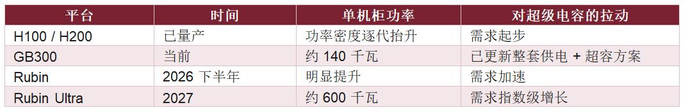

超级电容，正在从一个不起眼的储能配角，变成 AI 机柜里的“必配件”——这个转变正在发生。原因很直接：AI 服务器的功率密度一路狂飙，从 H100、H200 到 GB300，单机柜功率已做到约 140 千瓦，而到 2027 年的 Rubin Ultra，单机柜功率有望冲到约 600 千瓦，两三年约 4 倍提升。功率这么猛地往上走，载荷从“平稳”变成“高波动”，机柜里就必须上超级电容，在极短时间里做快速充放电缓冲——英伟达 GB300 已经为此更新了整套供电和超容方案。需求是指数级往上，但全球供给却高度集中：锂离子混合超容（LIC）看日本武藏，双电层电容（EDLC）看 Maxwell，就这两家扛着、产能吃紧。缺口一旦拉开，大概率要靠国内供应商来导入，而国内格局还没固化——这正是市场最近紧盯的方向。
① 单机柜功率翻4倍——超级电容被AI服务器逼成新刚需
AI 服务器和传统服务器最大的不同，是载荷端的功率密度一路狂飙。以英伟达为例，从 H100、H200 到 GB300，单机柜功率密度发生了非常大的变化；GB300 已经做到约 140 千瓦/柜，而到 2026 下半年的 Rubin、2027 年的 Rubin Ultra，单机柜功率有望冲到约 600 千瓦——两三年约 4 倍提升。功率这么猛地往上抬，供电体系压力极大，GB300 已经为此更新了整套供电和超容方案。功率密度越高，机柜里就越需要超级电容来扛住瞬时波动——超容正是被这股功率浪潮逼成了 AI 机柜的“必配件”。
② 快速充放电这道窄门——超容干的是锂电池干不了的活
为什么非得是超级电容？因为 AI 机柜的活儿，锂电池、普通电解电容都干不利索。从传统服务器到 AI 服务器，载荷从“平稳供电”变成“高波动”，机柜需要在极短时间内吞吐大量能量做缓冲。超级电容的特点正好对上：功率密度高、循环次数高、充放电时间极短、工作温度范围宽。它不负责长时间储能（那是锂电的活），而是专门卡在“快速充放电”这道窄门上，做瞬时的能量缓冲。在数据中心供电架构里，它既可以装在 IT 机柜内，也可以放在列头柜里做能量缓冲——架构一变，布点就跟着变。
③ 全球就两家龙头——供给侧最锋利的缺口正在裂开
需求这边是指数级往上，供给那边却高度集中。超级电容主要两条技术路线：一是双电层电容（EDLC），正负极用活性炭、纯物理储能，全球龙头是 Maxwell；二是锂离子混合超容（LIC），负极引入锂离子嵌入材料、能量密度更高，更适合空间紧张的 AI 机柜，目前是机柜里的主流路线，全球最核心的供应商是日本武藏。问题在于，AI 服务器升级带来的超容需求是指数级的，而全球就这两家龙头扛着，产能端压力很大。缺口一旦拉开，紧缺的这部分产能，大概率要靠国内供应商来导入——这正是最近市场盯着的方向。
④ 国内格局还没固化——这是国产从0到1的导入窗口
更关键的是，国内这块的竞争格局还没固化。国内布局较早、相对领先的有江海股份、思源电气旗下的西京碳能，中车新能源等也有超容业务，但这些公司前期更多做电网侧、新能源和储能，AI 数据中心这块还处在比较早期的导入阶段。格局没固化，意味着新玩家有机会重塑供给侧。比如火炬电子，去年超容已经形成一定收入，自己做“超容 + 锂电工商业混合储能系统”，还通过外延并购强化能力——其投资平台已持有中科超容约 33% 股权，内生培养加外延并购两条腿走。对国产厂商来说，这是一个从 0 到 1 的导入窗口。
一、功率密度狂飙：超级电容需求的发动机
超级电容的需求节奏，本质上是被 AI 机柜的功率密度推着走的。下表把英伟达各代平台的单机柜功率和对超容的拉动放在一起，可以直观看到这条“发动机曲线”。

更多公司与行业深度研究、产业链专题资料、订单增长及业务放量企业跟踪，以及每日行业动态与重要信息梳理，都将在知识星球持续更新。我们将长期关注产业趋势、竞争格局与企业经营变化，帮助你从海量信息中提炼关键线索，逐步建立系统的产业认知，提升独立思考、研究判断与商业分析能力。
本文综合整理自公开数据资料，仅供参考交流，不构成任何投资建议。市场有风险，投资需谨慎。